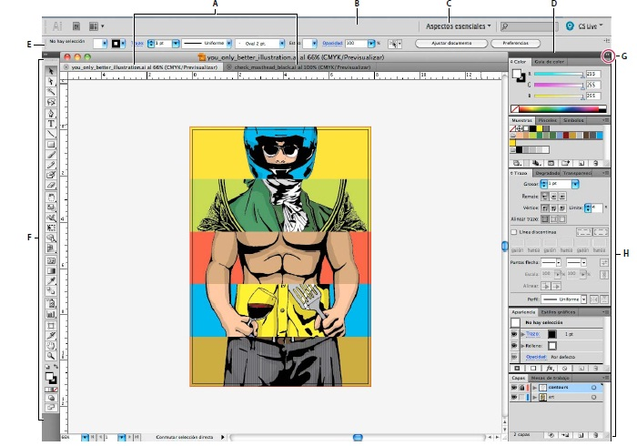
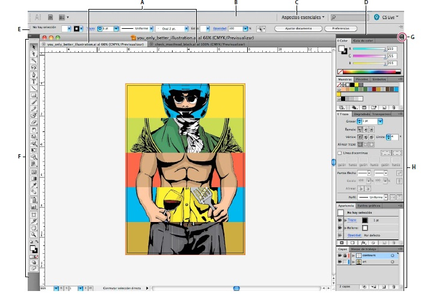

- La barra Aplicación de la parte superior contiene un conmutador de espacio de trabajo, menús (sólo en Windows)
y otros controles de la aplicación. En ciertos productos para Mac, puede mostrarla u ocultarla con el menú Ventana.
- El panel Herramientas incluye utilidades para crear y editar imágenes, ilustraciones, elementos de página, etc. Las
herramientas relacionadas están agrupadas.
- El panel Control muestra opciones específicas de la herramienta seleccionada en el momento. En Illustrator, el
panel Control muestra opciones del objeto seleccionado en ese momento. (En Adobe Photoshop®, también se
conoce como la barra de opciones. En Adobe Flash®, Adobe Dreamweaver® y Adobe Fireworks® se conoce como
Inspector de propiedades e incluye propiedades del elemento seleccionado en ese momento).
- La ventana Documento muestra el archivo en el que se trabaja. Las ventanas Documento se pueden organizar como
fichas y, en ciertos casos, también se pueden agrupar y acoplar.
- Los paneles ayudan a controlar y modificar el trabajo. Algunos ejemplos son la Línea de tiempo en Flash, el panel
Pincel en Illustrator, el panel Capas de Adobe Photoshop® y el panel Estilos CSS de Dreamweaver. Los paneles se
pueden agrupar, apilar o acoplar.
- El Marco de aplicación agrupa todos los elementos del espacio de trabajo en una ventana única e integrada que
permite tratar la aplicación como una sola unidad. Si mueve el marco de aplicación o alguno de sus elementos o si
cambia su tamaño, todos los elementos que integra responden en consecuencia para evitar su superposición. Los
paneles no desaparecen si cambia de aplicación o si hace clic sin querer fuera de ésta. Cuando trabaje con dos o más
aplicaciones, puede colocarlas una al lado de la otra en la pantalla o en varios monitores.
Si está utilizando Mac y prefiere la interfaz de usuario libre tradicional, tiene la opción de desactivar Marco de
aplicación. En Adobe Illustrator®, por ejemplo, elija Ventana > Marco de aplicación para activarlo o desactivarlo.
(Para Mac, el Marco de aplicación está siempre activado en Flash, mientras que Dreamweaver no lo utiliza). IR AL INICIO

|
 
